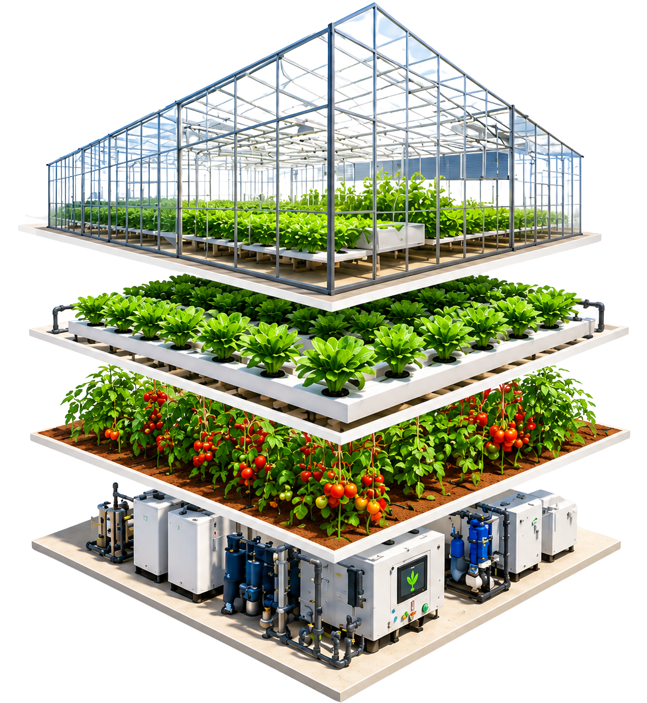
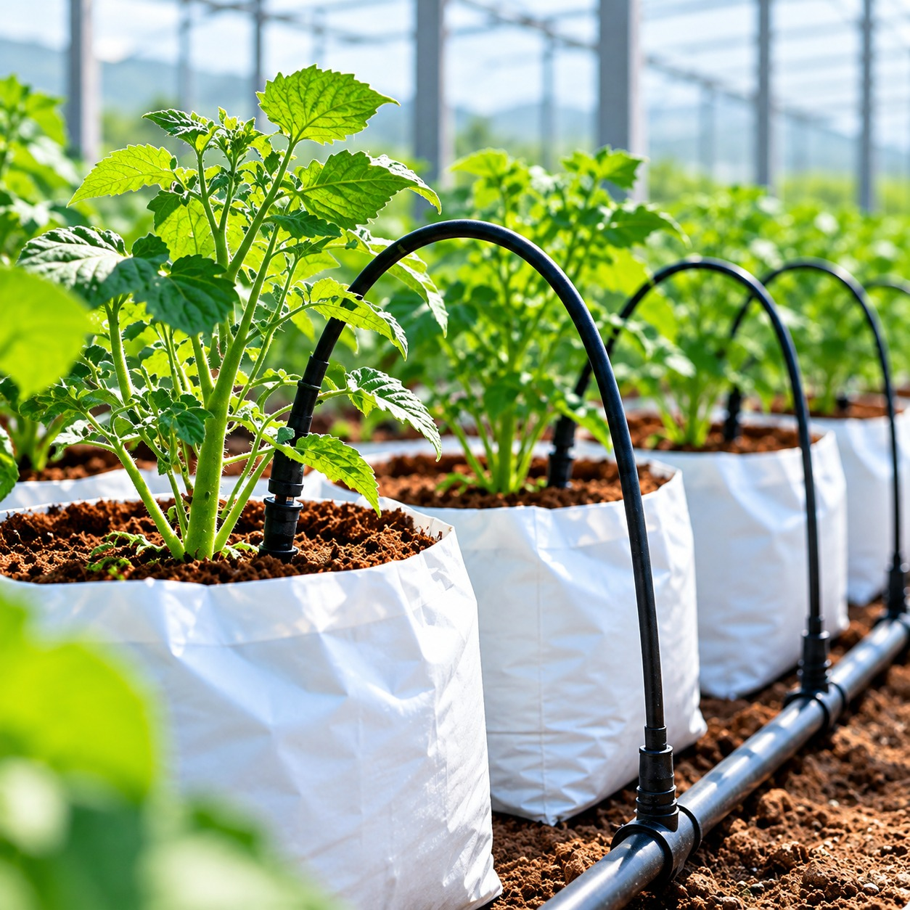
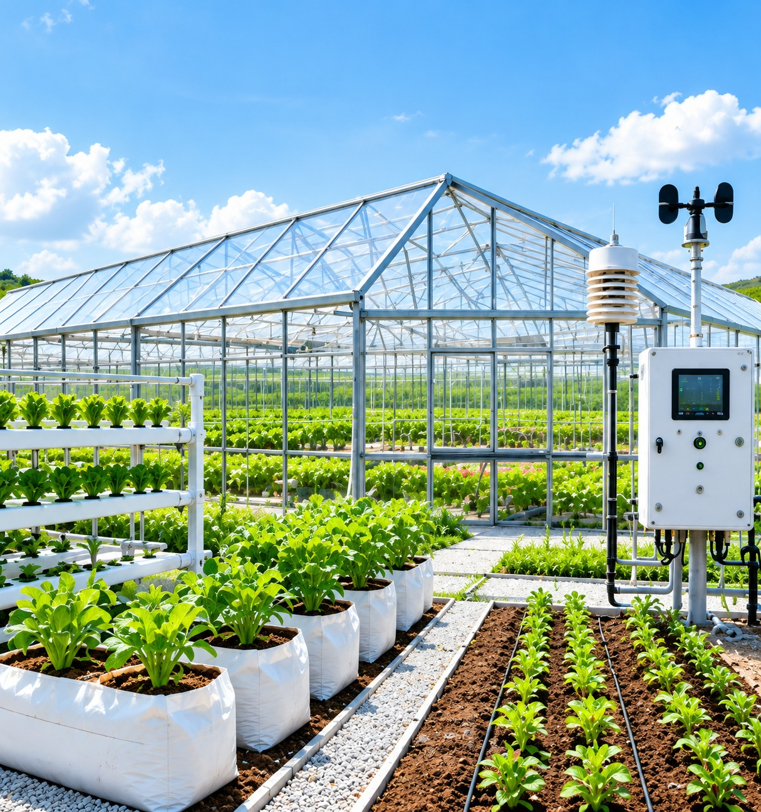

The Complete Ecosystem
A successful
A successful
farm is an
integrated system.
Protected structures, growing systems, crop solutions and automation work together to create the right environment, higher productivity and better commercial returns.
Explore Each Solution
-
01
Protected Structures
Create the right environment for year-round cultivation.
-
02
Growing Systems
Manage the root zone for healthier and faster growth.
-
03
Crop Solutions
Select the right crops and varieties for better yields and quality.
-
04
Automation Solutions
Improve precision, monitoring and control for greater efficiency.
Protected Structures
Protection
Protection
starts with the
right structure.
Engineered growing environments that protect your crops and create the right conditions for better growth, higher productivity and long-term sustainability.

-
Better crop protection
Reduced impact from weather, pests and external stress.
-
Stable growing environment
More consistent temperature, humidity and light conditions.
-
Higher productivity potential
A suitable environment for improved crop performance.
-
Longer operational life
Durable structures designed for long-term use.
Growing Systems
Smarter
Smarter
Growing Systems
for Every
Crop
Flexible growing systems designed to suit different crops, climates and investment levels — for higher yield, better quality and sustainable growth.
Explore Growing Systems-
Healthier
Plant Growth -
Optimised
Resource Use -
Scalable for
Different Crops
-
01
-
02
Cocopeat Based System
Controlled root zone with better aeration, moisture retention and precision nutrition.
Learn More
-
03
Soil Based Growing System
Reliable and proven method for a wide range of crops under protected cultivation.
Learn More
-
04
Custom & Hybrid Solutions
Tailored systems based on your crop, land, climate and business goals.
Learn More
03Crop Solutions
From global demand
From global demand
to local
opportunity.
A wide range of crops for different climates, markets and investment objectives. We help you choose crops that are technically suitable and commercially viable.

-

Exotic
Leafy Greens -

Exotic
Vine Crops -

Indian
Vegetables -

Berries
-
Medicinal
Crops -

Cannabis /
Hemp -
Flowers
01 / 07
Automation Solutions
Smarter Farms.
Smarter Farms.
Greater Control.
Technology-driven automation solutions to monitor, manage and optimise your farm — for consistent growth and better returns.
Explore Automation Solutions
Choose the right level
Automation,
Automation,
aligned to your
farm.
From manual to fully automated — flexible solutions for every scale and crop.
-
Manual
Simple & cost-effective
-
Semi-Automated
Better control & efficiency
-
Fully Automated
Maximum precision & scalability
The right level of automation depends on your crop, scale and business model.